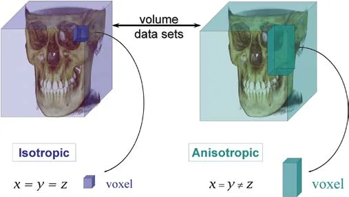
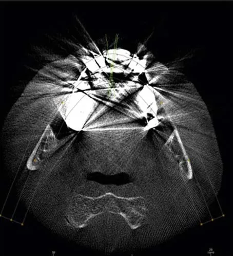

نسخه استخراجشده؛ ترجمه یا تأیید علمی انجام نشده است. وضعیت: captured
دادهی خام CBCT به حجمی از ووکسل تبدیل میشود — همان پیکسل، ولی سهبعدی. وقتی ابعاد ووکسل در هر سه جهت برابر باشد، به آن ایزوتروپیک میگویند؛ یعنی اندازهگیری در هر صفحهای به یک اندازه معتبر است. این ویژگی، دلیل اصلی برتری CBCT بر تصویربرداری دوبعدی در اندازهگیری است.
هر ووکسل عددی دارد که چگالی را توصیف میکند: واحد هانسفیلد. مقیاس استاندارد شده و مقدار صفر برای آب تعریف میشود. ولی مقادیر خاکستری CBCT لزوماً با واحد هانسفیلد سیتی پزشکی هممقیاس نیستند؛ پس عدد چگالی CBCT را نسبی بخوان.
FOV یا میدان دید، حجم اسکنشده را تعیین میکند و به اندازه و شکل دتکتور، هندسهی پرتو و کولیماسیون بستگی دارد. دستگاهها به سه دستهی کوچک، متوسط و بزرگ تقسیم میشوند — و انتخاب FOV، همزمان تصمیمی دربارهی پوشش و دوز است. هر ساختاری هم که وارد FOV شود، دیدن و گزارشش — حتی اگر خارج از پرسش اولیه باشد — بر عهدهی توست؛ پس کوچکترین FOV کافی را انتخاب کن.

دوز مؤثر بر حسب میکروسیورت، پذیرفتهشدهترین راه سنجش ریسک پرتو برای بیمار است. و خبر خوب: چهار اهرمش در دست اپراتور است — FOV، kVp، mA و زمان اسکن. یعنی «CBCT بگیرم یا نه» تنها تصمیم نیست؛ «چطور بگیرم» هم هست.
و چهار آرتیفکت که باید در نگاه اول بشناسی: سختشدگی پرتو که نواحی رادیولوسنت کاذب کنار ایمپلنت میسازد و میتواند با تحلیل استخوان اشتباه شود، خطوط streak ناشی از ترمیمهای فلزی که گاهی کل ناحیه را غیرقابل تفسیر میکند، آرتیفکت حرکتی ناشی از تکان خوردن بیمار، و نویز که تصویر را دانهدانه میکند.
یک اشتباه رایج: دهیسنس استخوانی که در تصاویر سهبعدی دیده میشود، گاهی ناشی از خود آرتیفکت است نه واقعیت آناتومیک. تصویر سهبعدی هم میتواند دروغ بگوید.
